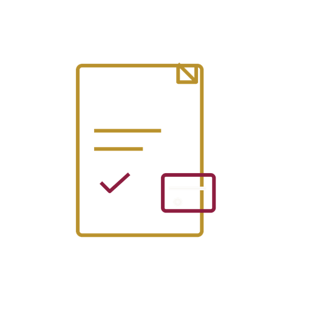
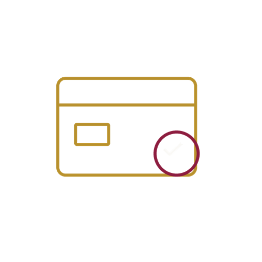

How Director Personal Code works, step by step
From choosing your route to receiving your Companies House code — here's exactly what happens at each stage, and exactly what to do if you don't hear from us on time.

Video: the step-by-step process for you to get your Companies House personal code
This is a video showing the step-by-step process for you to get your Companies House personal code — signing and paying, the online and in-person identity routes, and how we file it for you as your authorised agent.
Subtitles are built into the picture, so they play everywhere without needing to be switched on. A full written transcript is below.
Read the full transcript
Hello, and welcome to Director Personal Code, the Companies House identity verification service from Tax and Accounting Hub Limited, an Authorised Corporate Service Provider. In this video I am going to walk you through our process, step by step, from the moment you apply to the moment your code arrives. If you are not yet sure whether you actually need a personal code, watch our other video first, who needs a personal code.
Step one. Sign and pay. You complete a short online application, sign your engagement letter on screen, and pay securely by card. It takes around ten minutes, and there is nothing to print, scan or post.
Step two. Verify your identity. If you hold a biometric passport, a photocard driving licence, or a UK residence permit, we send you a secure link. You photograph your document with your phone, take a quick selfie, and that is it. No uploads to our website, and no documents by email.
If you would rather be seen in person, or your documents do not suit the digital route, we will arrange an appointment and check two original documents with you directly. Either route is fully accepted by Companies House.
Step three. We submit to Companies House. Our team reviews your check against our compliance checklist, then files it as your authorised agent. Companies House then emails your own eleven character personal code straight to you.
Throughout all of that, your data is encrypted, never sold, and retained securely for seven years, exactly as the regulations require.
And that is the whole process. So when you are ready to begin, look for the Apply Now button in the top right corner of this website, or the Start your application button just below this video. Click that tab, fill in the short form, and submit your application. We will take it from there.
Have these ready
Nothing to upload anywhere on our site — just have these to hand so nothing holds you up.
- Your original passport or other accepted photo ID — for the online route you'll photograph it with your phone; for the in-person route you bring the original to your appointment.
- A smartphone with a working camera (online route only).
- Your home address, and any other address you've lived at in the last 12 months.
- A personal email address that only you can access — Companies House sends your personal code here directly.
- Your mobile number, with the country code if you're outside the UK.
- If you've changed your name: your marriage certificate, civil partnership certificate, or deed poll.
Choose how you'll verify your identity
You'll make this choice near the start of the application. Both routes are fully accepted by Companies House — pick whichever suits your document and how you'd rather do it.
Online, from your phone
Best if you hold a biometric or machine-readable passport, an EU/EEA biometric national ID card, a UK/EU photocard driving licence, or a UK biometric residence permit (BRP/BRC). You complete the whole check remotely — no appointment, no travel.
In-person, at one of our offices
A member of our team personally examines your original document at a booked appointment in Bedford or London–Stratford. This is also the right choice if you'd simply rather not do a digital check remotely.
You'll also confirm whether you're a UK-based or foreign/overseas director at the start of the application — this sets your fixed fee. See full pricing.
The whole journey, step by step
From applying to receiving your personal code — including exactly what to do if something doesn't arrive when expected.
-

Apply & sign
Complete our short online application and sign your engagement letter digitally — takes a few minutes, nothing to upload.
-

Pay securely
Pay online by card, or by bank transfer, for your applicant type and route (£49 UK-based remote, £125 UK-based in person, £175 foreign or overseas). We open your case once payment is confirmed.
-
Verify your identity
What happens next depends on the route you chose at Step 1:
Online routeWithin a few minutes of payment, you'll get an email with a secure one-time TrustID link. Open it on your phone, photograph your ID and take a quick selfie — about 10 minutes. The link expires after 14 days.
Not arrived after a couple of hours? Check your spam or junk folder first, then email info@taxandaccountinghub.com with your case reference and confirmation that you've paid, and we'll resend it straight away.
In-person routeStraight after payment, request your appointment (office, preferred date and time) inside the application. We confirm your exact slot by email within 1 working day. Bring your original ID — no photocopies.
Haven't heard back after 2 working days? Email info@taxandaccountinghub.com and we'll get your appointment sorted.
-
Our review & submission
Our Companies House-authorised team reviews the outcome of your check (or the document seen at your appointment) and submits your verification to Companies House as your authorised agent — usually within a further 24–48 hours.
-
Receive your personal code
Companies House emails your unique 11-character personal code directly to the email address you gave on your application — we never see or handle this code. Not arrived within 24–48 hours of your check being submitted? Email info@taxandaccountinghub.com quoting your case reference and we'll follow it up.
Tips for your phone photo and selfie
A blurry photo or a bad angle is the single biggest cause of a delayed online check. These habits fix almost every issue.
Flat, dark, plain surface
Place the document flat on a dark, uncluttered background so the edges stand out clearly.
Even, glare-free lighting
Use good, even lighting and avoid glare and direct sunlight bouncing off the document.
Remove it from its wallet
Take the document out of any plastic wallet or sleeve before photographing it.
Fill the frame, all corners visible
Make sure all four corners are visible in the shot and the document fills most of the frame.
Hold the camera steady
Brace your elbows or rest your hands on a surface to avoid motion blur.
For your selfie
Face the camera directly, use a plain background, and remove hats or sunglasses.
What happens after your code arrives
Keep your personal code safe: you'll need it whenever you're appointed as a director, and you can share it with a trusted agent when filing on your behalf. Once you connect your code to your Companies House record, the public register shows that you're verified, which firm verified you, our AML supervisory body, and the date — but never your documents or home address.
Common questions, answered
How long does it take to receive my verification link after I pay?
Within a few minutes. On the online route this is fully automatic — as soon as your payment clears, TrustID emails your secure one-time link. Check your spam or junk folder if you don't see it. If it still hasn't arrived after a couple of hours, email info@taxandaccountinghub.com with your case reference and we'll resend it.
What if I don't have a biometric passport?
Choose the in-person route instead. You'll book an appointment at our Bedford or London–Stratford office and bring your original photo ID for one of our team to examine in person — no biometric document needed.
My passport has expired — can I still use it?
Sometimes — it depends on your documents, not simply on whether you go online or in person. Under the Companies House Registrar's identity verification rules, a single biometric passport can still be used up to 6 months after its expiry date, but only if the chip is still valid and our verification technology can read it. If that doesn't apply to you, you can still verify using two documents instead — for example a passport up to 18 months past expiry together with a second supporting document, such as another form of photo ID, a birth certificate, or a recent bank statement or utility bill. A cancelled or physically altered passport (for example one with a clipped corner) is never accepted, whatever its expiry date. Just tell us your passport's expiry date when you apply and we'll confirm the right route for you before you start — please check with us first.
How do I book an in-person appointment?
Request one directly within the application, straight after payment — just tell us your preferred office, date and time. A member of staff confirms your exact slot by email within 1 working day.
How long does the whole process take, start to finish?
Most applicants are fully verified within about a week of paying: your verification link arrives within minutes if you chose the online route, or your appointment is confirmed within 1 working day if you chose in-person, then a further 24–48 hours for our review and submission to Companies House, and then Companies House emails your personal code directly.
Who sends me my personal code — Director Personal Code or Companies House?
Companies House sends your unique code directly to the personal email address on your application. We never see or handle this code ourselves.
What if I don't receive my Companies House code?
If it hasn't arrived within 24–48 hours of your identity check being reviewed and submitted, email info@taxandaccountinghub.com quoting your case reference and we'll look into it.
Do I need to upload any documents on your website?
No — there is nothing to upload on our site. If you choose the online route, you verify your ID directly through TrustID's secure portal using your own phone camera. If you choose in-person, you simply bring the original document to your appointment.
What does it cost?
£49, all-inclusive, for a UK-based director verified remotely, or £125 in person; £175, all-inclusive, for a foreign/overseas director. See our full pricing.
Can I pay by bank transfer instead of card?
Yes — both card payment and bank transfer are offered at the payment step of the application.
Ready when you are
Start your application now, or read more about our ACSP service first.